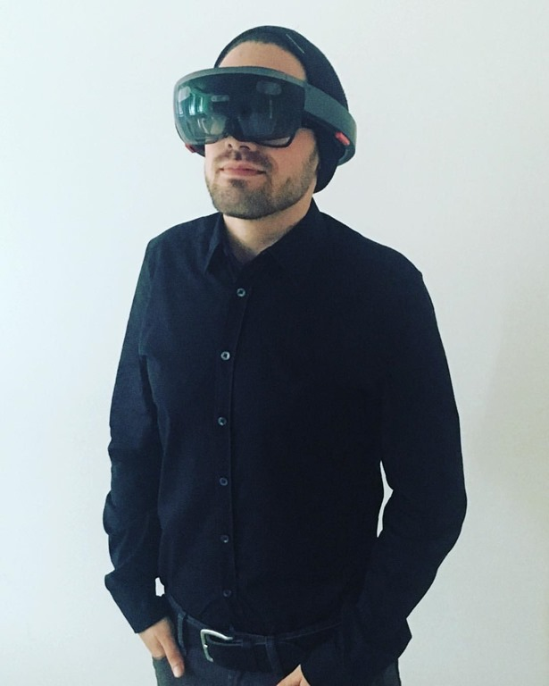
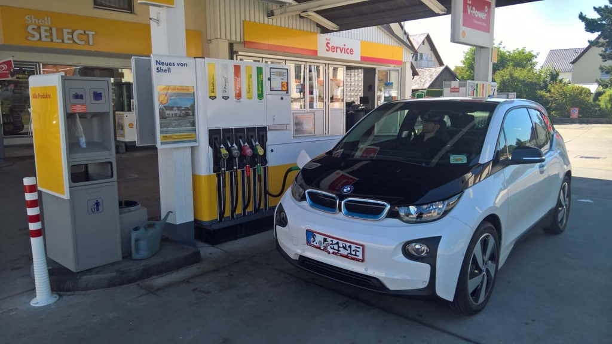
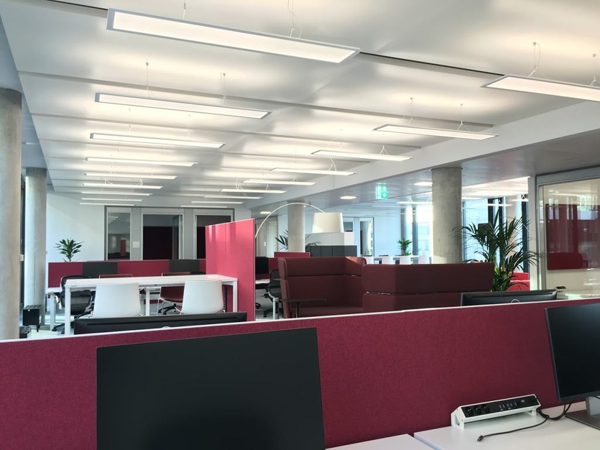
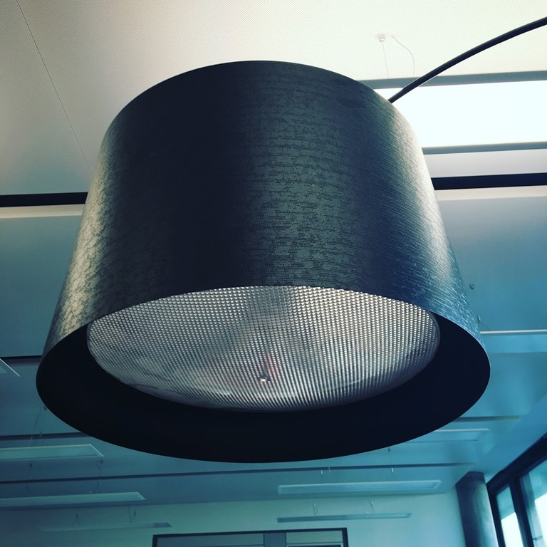
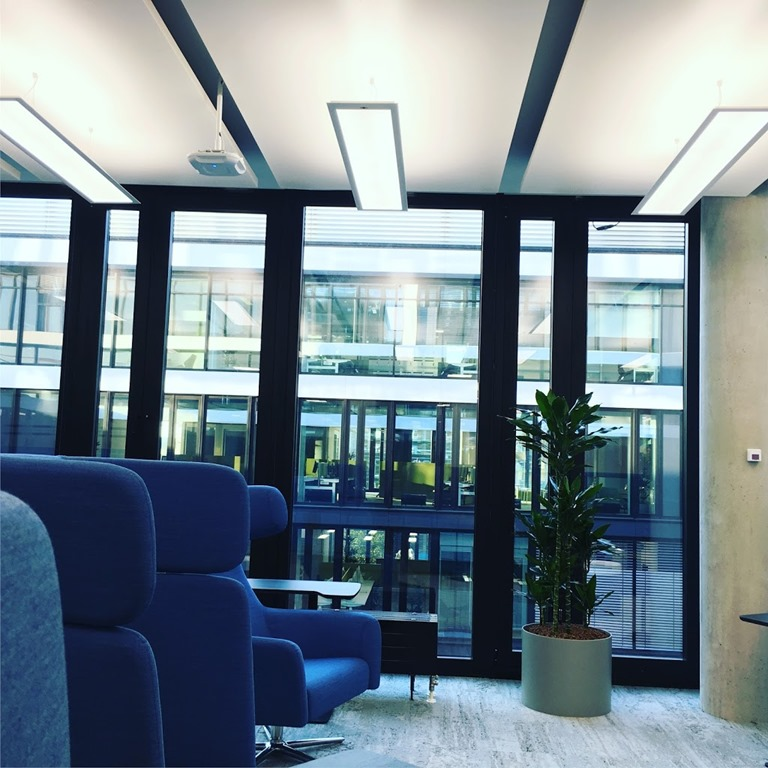
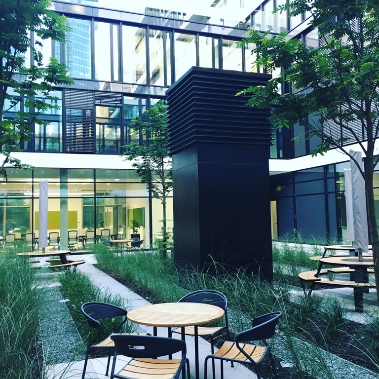
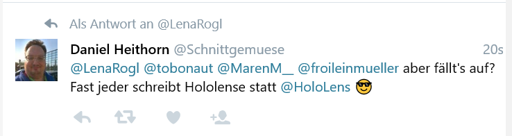

Selten sind die Nächte an denen man nach einen aufregenden Tag in sein Bett fällt und mit einem “wow”-Gefühl einschläft. Dies passierte mir vor wenigen Tagen nach dem ich diesen Tag gefühlt in der Zukunft verbracht habe.
Elektromobilität
Dank an den wohl liebsten Autoverrückten, Florian, konnte ich mit einem BMW i3 durch die schöne bayrische Landschaft Richtung München fahren. Vorbei ging die meist lautlose Fahrt an saftigen Wiesen, mittags-leutenden Kirchturmglocken und hupenden, münchnerischen Paketboten.
Kein störendes Motorengeblubber im Stau oder an der Ampel, kein Dauerlärm der davon abhält die Landschaft zu genießen und vor allem zu hören.
Fairerweise muss ich sagen, dass die selbe Strecke normalerweise über eine Autobahn führt und dort zu mindestens der BMW i3 mir sehr wenig Spaß als Beifahrer macht als auch durch den dann benötigten Range-Extender auch alles andere als umweltfreundlich und leise gewesen wäre.
Dennoch als Kuriosität des Tages gilt auf jeden Fall unser Tankstellenbesuch mit einem Elektroauto. Vollgetankt für acht Euro.

Auf einen Blick – HoloLens
Dank netter Freunde durfte ich die noch nicht so ganz in der Öffentlichkeit verbreitete AR-Brille HoloLens von Microsoft ausprobieren. Trotz dem Faktum, dass es trotz meiner großen Brille nicht der alle beste Tragekomfort war, ist die Microsoft HoloLens bisher für mich die “seriöseste” Brille im AR-, bzw. VR-Umfeld.
Im Gegensatz zu anderen AR-/VR-Headsets wie der Oculus Rift kommt die HoloLens ohne abführende Kabel aus. Hier durch wird es möglich, frei durch einen Raum zu stolzieren. Verdeutlicht wird dies durch das “Anpinnen” von Applikationsfenstern an einer beliebigen Wand. Vor einem der Browser, hinter einem der Terminkalender und vor einem auf dem Tisch baut man sich eine kleine Welt aus gestapelten Klötzchen. Dies wirkt schon sehr spacig auf den ersten Blick und macht Lust auf die Zeit, wo diese Gadgets allgegenwertig sein werden. Falls man Spaß an der Entwicklung von und mit UWP Apps, C# oder XAML wäre, hätte ich mich wohl noch mehr enthusiastisch gezeigt.

Monaco di Baviera
Ach München. Nirgends liegt Snopheit und das einfache Dolce Vita so eng beieinander wie hier. Für mich wirkt die Stadt und deren Bewohner ehrlich und direkt. Wer dies nicht glaubt, der sollte U-Bahn zur Stoßzeit fahren und den Durchsagen der Zugführer lauschen.
Um die tolle Sonnen zu genießen gesellte ich mich bei wunderschönen, sommerlichen Wetter an die Isar und bestaunte die Stadt-Surfer nahe dem Englischen Garten. Chillige Atmosphäre und weltoffen gegenüber vielen ausländischen Touristen und Surfern ohne jedoch gekünstelt zu wirken.
Genau so stell ich mir das Zusammenleben in der Zukunft vor. Weltoffen, ehrlich und rücksichtsvoll zu allen Mitmenschen.
Arbeitsplatz 4.0 im #OfficeMitWindows
Der eigentliche Grund warum ich an diesem letzten Sommertag in München war, befindet sich im Schwabinger Norden nahe der A9. Microsoft zieht, beziehungsweise ist gezogen, in ein neues Büro gezogen.
Das ganze Projekt wird seit Monaten auf Instagram unter dem Hashtag #officemitwindows der Öffentlichkeit mitgeteilt und neugierig gemacht. Nun ermöglichte es Microsoft Deutschland bevor das Büro bezogen wurde, eine Tour durch, die manchmal noch sehr im Baustellenmodus befindliche, Büroräume teilzunehmen.
In illustrerer Runde ging es durch offene Büroküchen – Social Hubs genannt -, durch Großraumbüros, vorbei an Einzel- oder Teambüros und Ruhezonen. Hinaus auf eine der vielen Dachterrassen des Gebäudes.
Mir als nun langjähriger Bürobewohner fiel mir gleich etwas ins Auge: Flächendenkend Stehschreibtische, Möglichkeiten mobile Geräte zu laden oder an überall vorhandenen, großen Dell Bildschirme mit den unterschiedlichsten Kabeln anzuschließen.
Alles wirkt sehr clean und technisch in kubischen Formen. Kabelsalat scheint nicht zu existierend genau so wie Mülleimer – werden wohl in einem papierlosen Büro nicht mehr benötigt. Wie lange dieser künstliche Look während des alltäglichen Bürobetriebes bleiben wird, muss sich wohl noch zeigen.
Generell ist vieles sehr kühl gehalten und lenkt nicht von dem zu bewältigenden Task ab. Einzig wenige Stilelemente wie die großen Stehlampen oder die an Nierentisch angelehnten Großbürotische durchbrechen die moderne Kühle des Bürokomplexes. Für mich persönlich waren die sehr gesättigten Farben sehr augenaufregend. Die verschiedenen Büroteile sind natürlich in den Microsoft-typischen Vollfarben eingefärbt. Zu mindestens auf den ersten Blick für mich sehr aufwühlend.
Zum Abschluss der Tour, bei sehr leckeren Catering, konnte man auch Fragen zum alltäglichen Arbeitsleben bei der Microsoft Deutschland GmbH stellen. Mich interessierte vor allem wie Angestellte die #vertrauensarbeitszeit beziehungsweise den #vertrauensarbeitsort sehen. Ich sehe hier neben den etwaigen Vorteilen für den Arbeitnehmer auch die Nachteile, dass man immer und überall für das Projekt beziehungsweise den Arbeitgeber verfügbar sein soll oder gar muss. Diese Bedenken wurden mir von mehreren Seiten als nicht existent genommen.
Es ist schon komisch, dass ein starrer und über viele Jahre als “spießigen” Global Player wie Microsoft nun selbst Startups aufzeigt wie die moderne Arbeitswelt und Mitarbeitermotiviation funktioniert.
Schon allein wegen dem Gutschein für die Digital Eatery – dem öffentlich zugänglichen Café innerhalb des Bürokomplexes – werde ich mir das #officemitwindows wohl noch einmal ansehen (müssen).
[] [] [] []
Fazit
Alles in allem war es ein toller Tag mit vielen neuen Eindrücken und Gedankenansätzen wie unserer Zukunft in gesellschaftlicher, als auch in beruflicher Sicht aussehen könnte. Wenn wir alle Mut und Engagement zeigen, könnten wir diese bereits von wenigen Menschen gelebte Utopie eventuell auch für alle erreichbar machen.
Vielen herzlichen danke an Flo T. und Flo K. sowie Magdalena und Anna Lena von Microsoft Deutschland für den aufregenden Tag. Ich hoffe auf eine Wiederholung.
Anmerkung
Merci @schnittgemuese für die Korrektur von HoloLense zu HoloLens.
[]
Back